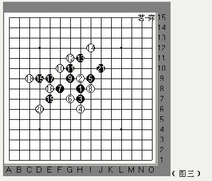
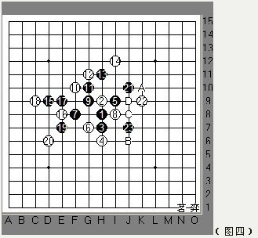
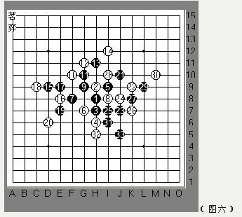

日本第61届全国通信战的一局棋
#1 日本第61届全国通信战的一局棋 作者：大雪无痕 发表时间：2009-12-17 16:28:08
我刚开始学习松月开局，见市川下这个9取胜了，我下这个9却连输三局，特邀请刀儿师傅写写市川树生执黑对长谷川一人的这盘松月局的小评，以供我学习。
以下就是刀儿的棋评：
本局为日本第61届全国通信战上市川树生（执黑）VS长谷川一人（执白）的一局松月。
2打，行至8手均为定式最强走法，那么9手一般在上图B点位置，可实战中市川下在了这个位置，活2个2，后来我和雪儿拆了几盘，发现这个9黑的发展空间其实比较限制，黑棋后边也颇不好连接全盘，个人感觉不太好，当然也由于我棋力远远不够的缘故。如图，10手一般取这2个点，长谷川选择了控制白棋，落于B点处。
11--13还是遵循开局抢2的原则，问题出现了，14手白档了后黑棋该如何拓展？基本思路大概3个：B点继续反活2；C点2个眠三做棋发展，实战中黑市大胆下出A点，拓展棋型，也对白棋实施牵制。

16，18手控制压缩黑的空间，19活三白档了后黑棋左下暂时没看到什么好棋，而黑棋左下和右上的棋子也分开了无法连接，黑不乐观。21无奈转身去右上做棋。

22阻挡21的斜线发展和自己的8也成八卦进攻，23限制白眠2出头和21形成大跳活2.这里黑有隐藏的杀着，这个杀利用19.7.9这个免三等右上全部子力，我们看看，如果24不防在要点上，黑杀的路线如下图：
从这23这手棋，可以显示出执黑棋力不凡。回到图四，白的强防大概有这么几种，我觉得这里其实还是老实点防守比较稳妥，压缩黑的拓展，分段黑的一些连接，尽量多争取些自己的外势。实战中长谷川选择了在进攻中防守C点。

那么到了27手这里感觉黑又有优势了，优势在哪？27的斜线又与上边中间那一团棋相连了，那个位置黑有东西，只是需要有借助的子力，此时逼迫28无奈去中间填一子了。29抓住机会进攻活三，30档上边正确，因为上边黑还有眠三可做杀。黑继续进攻，冲四活三，此时黑很成功并顺利的过渡到了下边。
34档外边控制外势的心态是不难理解的，但这里却错了，黑3.33.31一个免三，19.7，9一个免三，9，1，25一个免三，1，5，21一个免三。哈哈数不过来了。35手黑方洞悉并深刻领会全盘异常凶猛暴力，把整盘棋都积极调动联系起来，不得不为之瞠目结舌。我想偶像就是这么来的。不禁想狂呼一声：35手我爱你！
其实这里有唯一防，但一般很难想象到，当然这个点我也是用软件才找到的，噶噶！如图：
看来3，31，33这个眠三是关键。白必须先控制住，再想法控制右边，但这个实战的话计算量太大。
这盘棋我学习到黑棋的灵活运用子力，和联系全盘做棋的超强大局观及对每颗子的理解每步棋后边用途的思索。我亲爱的朋友，您有什么体会呢？
［ 慎独 于 2009-12-17 20:41:16 时花20金币送鲜花一朵］
［ 慎独 于 2009-12-17 20:41:26 时花20金币送鲜花一朵］
［ 慎独 于 2009-12-17 20:41:36 时花20金币送鲜花一朵］
［ 行云流水 于 2009-12-18 13:01:56 时奖励此帖[金币加 20 威望加1］
#2 Re:日本第61届全国通信战的一局棋 作者：日月之合 发表时间：2009-12-17 17:02:09
哦我 看 过 师傅下 过 这局！我 还问9=10是 不 是更 好 些呢！现在 看 了 这才 明白［ 大雪无痕 于 2009-12-18 14:10:06 时花20金币送鲜花一朵］
#3 Re:日本第61届全国通信战的一局棋 作者：梦醉南天 发表时间：2009-12-17 17:12:33
很多看不懂的局面，呵呵，都是师傅帮咱们分析，谢谢师傅［ 大雪无痕 于 2009-12-18 14:10:23 时花20金币送鲜花一朵］
#4 Re:日本第61届全国通信战的一局棋 作者：流浪者的梦 发表时间：2009-12-17 17:18:45
 图呢？咋没看到？无图无真相啊......
图呢？咋没看到？无图无真相啊......
#5 Re:日本第61届全国通信战的一局棋 作者：怪 发表时间：2009-12-17 17:51:47
看见了此图来自qq空间#6 Re:日本第61届全国通信战的一局棋 作者：茗弈小刀 发表时间：2009-12-17 19:36:09
真无语，我来传吧。
［ 大雪无痕 于 2009-12-18 14:10:42 时花20金币送鲜花一朵］
#7 Re:日本第61届全国通信战的一局棋 作者：大雪无痕 发表时间：2009-12-17 19:51:35
如果在该网站不能看到图片的话，请来我的空间看
#8 Re:日本第61届全国通信战的一局棋 作者：茗弈小刀 发表时间：2009-12-17 20:40:03
 就是想让大家欣赏你的棋盘吧。
就是想让大家欣赏你的棋盘吧。
#9 Re:日本第61届全国通信战的一局棋 作者：大雪无痕 发表时间：2009-12-18 10:34:22
 ，你又误会我了
，你又误会我了
不过我的棋盘确实挺好的，棋盘大、棋子大、背景也好看
#10 Re:日本第61届全国通信战的一局棋 作者：我爱老婆一生 发表时间：2009-12-18 12:56:15
这个要重点学习一下.黑九应该还有其他选择吧.比如H10好象也可以［ 大雪无痕 于 2009-12-18 14:09:40 时花20金币送鲜花一朵］